The Secret Life of Alclad II
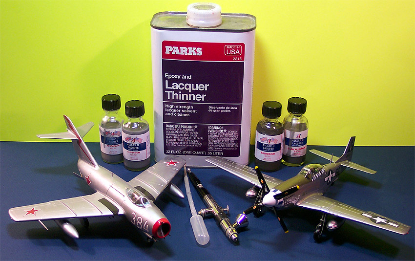
Images and text Copyright © 2004/2014 by Matt Swan
General Paint Dynamics
Before we look at using Alclad paint let's discuss some of the particulars about how paint does what it does and some of the different paints we find in our hobby. Paints are coatings containing carrier material and pigments or coloration that in most cases simply lie on top of the substrate material (in this case, plastic) and in some cases blend with the substrate material. The three most common paints that we find in the plastic model industry are acrylics, enamels and lacquers.
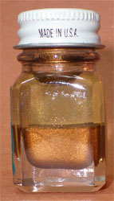
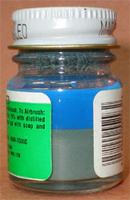
Acrylics are what are often called 'water based' and will utilize a water/alcohol carrier and a resin based pigment. If you look carefully at a bottle of acrylic paint after it has had plenty of time to settle out you can see that about half the bottle is a clear liquid with the other half being mostly pigment. This will be important later in this article. These paints can often be successfully thinned with distilled water or isopropyl (rubbing) alcohol (alcohol mixes with water just fine, ask any bartender). Clean-up with these paints is usually achieved with water or ammonia based glass cleaners. Dried or cured paint displays some resistance to solvents but is somewhat delicate in that it is easily scratched or lifted from the plastic. These paints are all pretty much non-toxic and child friendly.
Enamel paints use petroleum based carriers to deliver the color to the subject. As with the acrylic paint when you give the paint some time to settle out you can see a very similar level of separation within the bottle, maybe just a little more carrier than pigment but still, similar. When thinning enamel paints you would use enamel thinner that usually contains various volatile petrochemicals as Naphtha, Mineral Spirits, Methyl Ethyl Ketone (MEK) or lacquer thinner. Fumes from these chemicals are not only flammable but slightly toxic (inhaled MEK fumes will attack the central nervous system) so good ventilation is required and a Organic Vapor/R95 Particulate respirator is recommended. Clean-up is achieved with the same chemistry as is used to thin the paint. Enamel paints are more durable than acrylics, more resistant to scratching, more tolerant of surface contaminants but not very resistant to solvents. They tend to take longer to dry or cure before they can be safely handled.
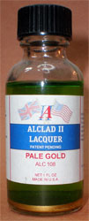
Lacquer paints consist of a very high degree of lacquer with a very small amount of pigment or coloration. When you allow these paints to settle out, and they will do so very quickly, you will find that over 90% of the container is clear carrier and there is very, very little pigment in the mix - this will become very important later on. Thinning of lacquer based paints is generally not needed since they contain so little actual paint to begin with. As with enamel paints we have volatile materials here that are potentially toxic to the human physiology so once again, good ventilation is required and you will want to use that Organic Vapor/R95 Particulate respirator. Clean-up is achieved with more lacquer thinner. Lacquer thinner (it's called Cellulose thinner in the U.K.) has an extremely high evaporation rate which results in very fast dry times. This does not mean the paint is fully cured though but given a couple hours it becomes pretty much bullet proof. Lacquer paints are very durable as far as scratch resistance and lifting goes.
So in a nutshell that's what the paints are. Next let's discuss how they actually bond to the model surface. Imagine if you will, that the paint is like a bunch of bricks floating in a liquid, bricks arraigned without any order whatsoever. Now this mixture of bricks and liquid is spread across a surface and the liquid begins to evaporate, as this happens the bricks begin to stack themselves much like you would see in a brick wall. Consider in the picture below that the light tan area is the plastic. The bricks are your paint pigment and the liquid is your carrier. The mortar is an electromagnetic bond between the molecules of paint and plastic. The surface tension (electromagnetic bond) between the flat side of the brick and the plastic surface is what holds things in place. When talking about acrylic paint the gaps between the bricks are fairly large resulting in reduced surface tension. This means the amount of force needed to pull the brick away is not very great and there is plenty of room for any kind of junk (surface contaminant) to get between the bricks.
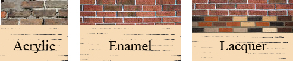
Are you with me so far? Now with enamel paint the bricks stack closer together forcing contaminants away and resulting in greater surface tension. Now you need to apply much more force to pull those dry bricks away from the surface. Think of the force to pull the bricks away as masking tape when you are creating a camouflage pattern - is this starting to make sense now? When we deal with lacquer paints something unusual happens with these bricks. Lacquer (and MEK) are very powerful solvents and will actually start to melt plastic (MEK is often used as liquid plastic cement). As it melts the plastic the little bricks that form the plastic are allowed to move into the solution and mix with the little bricks that are paint. As the lacquer aspect of the paint evaporates away and the bricks lay themselves back down you suddenly have a blend of plastic bricks and paint bricks together. See the third image above of a brick wall with red and brown bricks interspersed. Now it is virtually impossible to lift one of those paint bricks off the plastic because it has actually become part of the plastic and vice versa.
Now we have a basic groundwork of what paint does and why it sticks to the model. Let's throw one more detail into this mix, a general - rule of thumb - order that paints should be applied to your model. Note that I say 'general'; there are exceptions to any rule. When you are applying paint to your model you should always apply any lacquer based paints first followed by any enamel based paints then any acrylics last. This will provide the least amount of trouble with paint interactions and greatly reduce the risk of pulling paint off when masking subsequent layers.
Working with Alclad II
I think we can start talking about the specifics of using Alclad paints now. As with any paint, having a clean surface free of contaminant or debris and applying a good primer is key to a good finish. When working with lacquers this is even more important and this is why: Consider the amounts of pigment that we have already identified in the various types of paints vs. the amount of carrier liquid. In the paint industry we talk about thickness of coating in mils - that's thousandths of an inch for the layman. The cellophane that wraps a pack of cigarettes is about 1 mil. When you apply acrylic or enamel paints to a model you are ending up with a coating that is about 2 or 3 mils in thickness. When you apply lacquer paint you end up with a coating that is slightly greater than 1/2 of a mil - very, very thin. What this boils down to is that you have very little material to fill any kind of surface variations like scratches or incompletely filled seams. These things will telegraph right through your paint.
Alclad Rule #1:
Fill all seams then sand surface with fine sand paper. Once you think you have done a good enough job, then do it again with polishing sandpaper, 1200 or finer grit.
Now let’s talk primer. There are several schools of thought concerning priming for Alclad. Alclad makes its own primer which was originally an acrylic primer. Wait, this is contrary to the general rule of thumb for order of paints! What they were trying to do was apply the acrylic as a barrier between the plastic and the solvents in the lacquer paint and was trying to provide a thick enough coating to fill small imperfections in the surface. This only works if very fine layers of lacquer paint are applied and allowed to dry before re-coating and it is very easy to screw this up and have the solvent eat right through the acrylic primer and really make a mess. Now Alclad offers a lacquer primer.
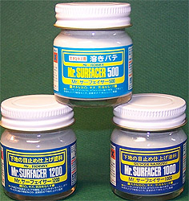
Another choice in potential primer is Future Floor Polish (notice I don’t say wax). If you are already familiar with Future then you may recall it is actually a clear acrylic coating with excellent self leveling properties. Again, a violation of the general rule of paint order application. The primary idea here is the same as with the original Alclad acrylic primer; protect the plastic from the solvents and fill minor imperfections. The risks are the same as well, you can easily apply too much lacquer and eat right through the primer and believe me, this happens fast.
Next we can talk about Mr. Surfacer 1200 or Tamiya Liquid Putty. Both of these are lacquer based liquid putties generally used to fill small imperfections and/or seams. If you add about 50% lacquer thinner to these products you will have a very nice light gray primer you can shoot through your airbrush. If using this kind of primer you need to watch for an effect called 'Spider Webs'. This will manifest itself as fine threads forming around the edges of the plastic while you are airbrushing. This is caused by insufficient lacquer thinner in your mix; simply add more lacquer thinner and the spider webs will go away. Now we are using a lacquer based material so are not in violation of the general rule of paint order application. We also have a material that has a considerably higher ratio of pigment/resin to carrier so is able to fill minor surface imperfections. Additionally we can sand this material after it has cured should we find any serious imperfections that may telegraph through our paint then apply a second coat. At this point we may want to stop and say we have the perfect primer but that is not the case. Liquid putty primers are fine for most Alclad paints however if you are going for a final finish with a high gloss such as chrome or shiny aluminum then the search must continue.
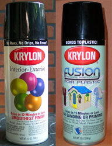
The next primer option I want to talk about is Krylon paint, yeah - the stuff that comes in a rattle can from the big box store. There are two different Krylon paints you'll want to look for, both are gloss black. The first is standard Interior-Exterior gloss black and the second is the Fusion gloss black for plastic. Think back to my discussion on paint pigment as bricks and how it acts with lacquer and that fusion name-tag suddenly makes a certain kind of sense. Both of these paints are lacquer based paints however they are not suitable for use via the rattle can. You simply cannot exercise good control on a model with one of these cans so you must decant the paint prior to use and here is how you do that.
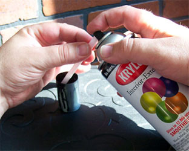
Decanting paint is a process where you are separating the paint from the compressed gasses inside the can. To begin you need a nice fat drinking straw. I'm not talking about some little swizzle stick here but something you could suck a nice thick milkshake through. Cut the straw in half. Now find something you can use as a collection cup like an old 35mm film canister (man, those are getting rare these days) or a solid plastic drinking cup. If you use some thin little disposable drinking cup get ready to have paint all over the place because the lacquer carrier will eat right though thin plastic. Head outside or at least put down some newspaper to deal with any unexpected spills, place one end of the drinking straw over the spray head on the rattle can and hold the other end inside your collection cup and press the button. Don't draw off more than you can use because there are some storage issues with this decanted paint.
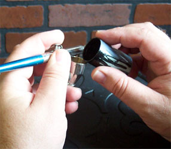
Decanted Krylon paint does not need to be thinned before use in an airbrush. Apply a couple of light coats to your model, not too heavy or you run the risk of melting the plastic. Krylon is about the same paint to carrier ratio as Alclad so you are back to putting down less than 1 mil of final paint and this means you have nothing to fill small imperfections in the surface. This goes back to proper surface preparation. You can sand Krylon and apply a second coat if needed. You clean up using lacquer thinner. The gloss black Krylon paints provide for an excellent shine with metal based lacquer paints and are critical when going for any chrome finish.
The last primer option is automotive lacquer primers. For our purposes we will consider only those that come in a rattle can and are commonly found at any automotive paint supply store. These primers commonly are available in both gray and rust red. They are decanted in the same manner as Krylon paints are and applied in the same manner. These primers are flat in nature which is a result of having a slightly rough finish which makes a final polishing with sandpaper before applying Alclad a must. This may seem like a lot of work compared to the other primers but there are certain situations where you may want to use these primers and I will discuss these later on in the contrasting panel section of this article.
Alclad Rule #2:
Lay down a smooth, consistent primer layer using a lacquer based primer. Use gloss black for Chrome or Shiny Metal finishes.
So let's review quickly, we have filled our seams, sanded and polished our surface, applied our primer and checked the surface for any imperfections we may have missed earlier. If any repairs were needed they have been completed and the surface has had another coat of primer applied. Now we are ready to put on some color. We're also going to throw in some pictures of different models primed then painted for your entertainment beginning with this 1/48 P-51 Mustang primed with Krylon Gloss black and Alclad aluminum #101.
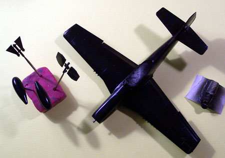 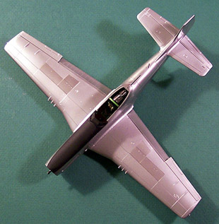
Some older bottles of Alclad will contain small BBs or ball bearings to help mix the paint. Later packagings did not include these ball bearings. Shake your bottle of Alclad and check the bottom of the bottle repeated until all the paint is mixed into the solution. Set you airbrush for about 18 psi and load your paint cup. Start with a light coat to allow the paint to bite into the primer then come back within just a minute or two and apply a second slightly heavier coat. This stuff has a lot of thinner in it so it is easy to create runs. Should you get a run; stop, let the paint dry then lightly sand the offending area before re-coating. Apply a smooth, even coat just slightly wet across the entire surface of the model keeping the tip of your airbrush about two or three inches from the surface. If you hold back too far with the airbrush the paint will start drying before it hits the model surface creating a dusty look. If this happens light sand and re-coat. Place you model in a dust free environment (basically I mean turn a box upside down over the model) to let it dry - should not take long. The surface of the model should be dry to the touch very quickly however if you did not allow sufficient time for your primer to cure the overall dry time could extend to a couple days. I like to allow for about eight to twelve hours of dry time (overnight) between color coats.
Once your base coat of Alclad is cured and you have nothing that needs repair you can mask off areas for contrasting panels or other paints such as enamels or acrylics. Keep your general rule of paint order application in mind and put on any enamels before you start working with acrylics. It is highly unlikely that you will experience any problems with paint lifting with your masks after shooting a second color over Alclad. Depending on what your desires for the model is you may stop right here or you may continue with some additional effects. In this next set of images you can see some distortion in the black primer on this P-47 Thunderbolt. That is due to variations within the plastic when the molds were shot. Sometimes this can present a problem and others it will not. I got lucky with this one and the paint covered it just fine.
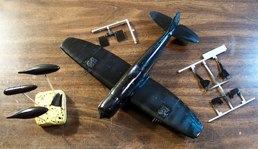 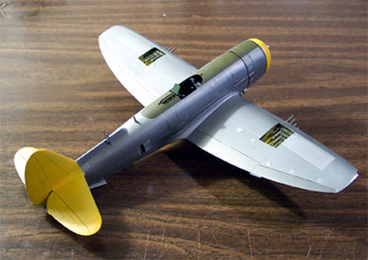
Alclad Rule #3:
Start with a light coat of Alclad to bite into the surface then follow up with slightly heavier coats to create an overall consistent, slightly wet coating.
Contrasting Panels
Aircraft are commonly manufactured from aluminum or other lightweight soft metals such as duraluminum or magnesium. Not only do each of these metals have slightly different shades to them from material composition but the manner of manufacture can cause tonal differences in the surface of the material. Look at any natural metal finish aircraft on the flight line and you probably will not see a completely uniform color to the surface, some panels may appear slightly darker or lighter than others. These are contrasting panels. This is fairly easy to replicate on the model and there are several different ways of achieving the effect.
First and probably easiest (in my book) is to simply mask off some panels with wide strips of masking tape, select a slightly darker or lighter shade of Alclad and simply dust some of that color over the panel then remove the mask. In this next series of pictures this resin 1/48 P-40Q has been primed with Mr. Surfacer 1200 cut 50% with lacquer thinner then base coated with Alclad aluminum #101 then had various panels masked and shot with white aluminum, dark aluminum and duraluminum.
You can create contrasting panels by masking panels during the primer phase and using different primers. If you primed the model with Krylon gloss black then masked a couple panels and shot them with Mr. Surfacer 1200 then masked a few more panels and shot them with some automotive rust red primer then shot the entire model with a single shade of Alclad you would end up with various contrasting panels – neat, huh? This method also provides for a very subtle level of contrast.
Yet another option would be sanding panels. Prime your model with your primer of choice then mask off some panels. Now take different levels of fine sandpaper and sand those masked panels lightly. Sand some rubbing front to back but sand others rubbing left to right. Remove your masks and paint with a single shade of Alclad. Now you will have a very mild panel contrast that will appear different from both of the previous methods. Want to go really nuts? Combine all three methods and see what happens.
I could go on all day about different ways to achieve different levels of panel contrast from surface texturing to various primers or even laying down gold or brass Alclads before applying the final top color. This is the point where you as the modeler must step into the unknown and start experimenting. Sometimes you will fail but sometimes you will amaze yourself.
Alclad Rule #4:
Allow each color coat to cure before adding the next color coat. Usually eight to twelve hours (overnight) is safe.
Accenting Panel Lines
Panel lines can be highlighted in very similar manner to that used with conventional paints. You can preshade if you are not using a black Krylon primer but where on a conventional paint job you might use a black enamel here you would use Krylon gloss black to preshade your panel lines. Now when you shoot your top color you have to be careful not to apply such a heavy coat as to obliterate the preshade. You can also post shade and I find this the most effective. After you have done your contrasting panels but have not done any other colors such as enamel anti glare panels you may select a slightly darker shade of Alclad, load your airbrush, set air pressure around 18 psi and lightly trace your panel lines. You are not looking to lay down a very heavy layer here and really do not even need a consistent amount of paint along the panel line. If fact some variation is desirable. If things get a little too heavy you can come back with your original base color and mist just a little over the panel lines to help blend it back in. Now mask off areas that will be some other color like the antiglare panel on the XP-72 below. Once the tape is in place preshade the panel lines with black then shoot your top color over it. When you remove the mask the panel line discoloration will be constant through the color change. If you like you can add a sludge wash to your panel lines now. This works the same as with any conventional sludge wash application. These following images are both done with post shade panel lines.
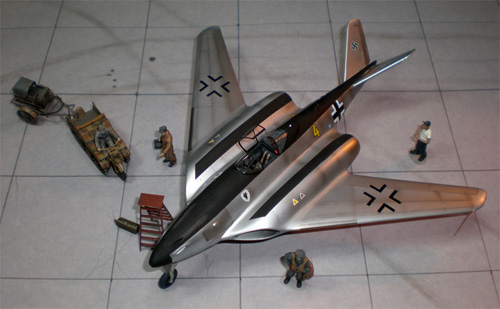 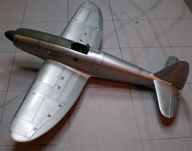
Clear Coats and Decals on Alclad
Unlike most conventional paint finishes you do not need to seal the surface of an Alclad paint job prior to applying decals. In fact if you put just a regular coat of clear coat on the surface you will actually detract from the final appearance. You can simply go straight to applying decals and do not need to seal them afterwards. I would not recommend using Future as a decal setting agent in this instance as it will leave a very noticeable mark on the finish. However, like most rules there is an exception to this one. If you want a finish that really glows then you can use Future but you will have to add a good amount of elbow grease along with it. Here is the idea, after all decals have been applied seal the model with Future and let cure overnight. Now buff the entire model with very fine sandpaper, 1800 to 2000 grit. Re-coat with Future and let cure overnight. Buff out the model yet again and seal yet again with future. You'll want to do this about FIVE times but in the end you will have a glass surface like finish that simply glows, lots of work if you're into that kind of thing.

Fun with Alclad
Alclad makes a fairly wide variety of colors in not only metals but in prismatic colors also like scarab and sapphire blue, ruby red, emerald green and others. You can also take any Alclad paint and add a few drops of just about any enamel color to tint in. Keep in mid that Alclad paints tend to be somewhat translucent so underlying colors will contribute to the tone of the final surface. This Jedi Star Fighter has the entire exterior finish done with variations in Alclad and that includes the base as well.
You are more than just a modeler, you are an artist, experiment, push the boundaries of convention. Try different things and see what happens. Sometimes these experiments will fail but sometimes you will get extraordinary results - then you are a bloody genius!
Alclad Rule #5:
Think outside the box. Okay, that's not really an Alclad rule but it is a good idea.